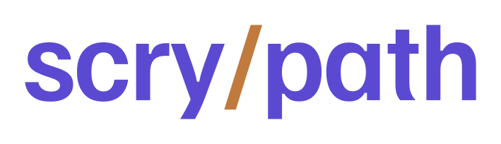
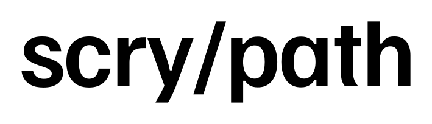
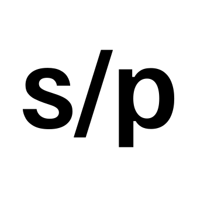

scrypath · v1.35 · direction C · final proof
scry / path — the copper separator, finalized
Pristine Familjen Grotesk wordmark, ink letters + the weight-matched copper /. Wordmark is outlined to vector paths (font-independent). The s/p monogram carries the brand violet + the same copper slash. Every file is transparent, no cage.
Primary lockup — light / dark
Violet-forward alternate (optional — brand-primary colour)


The mark — s/p monogram


Stacked (avatar / vertical)
